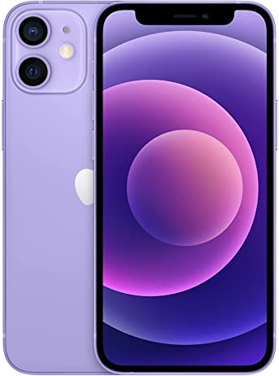
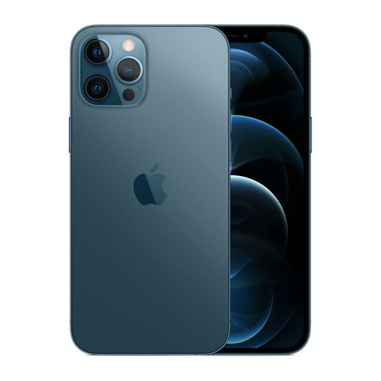
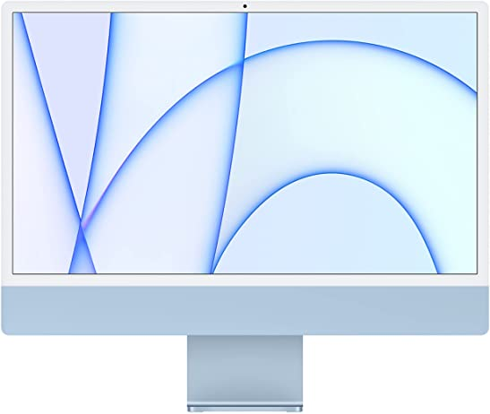
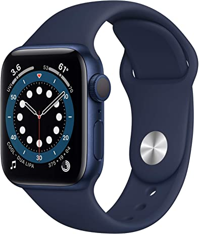

Home | Store | Contacts | About
Products
|  |
Apple iPhone 12 Mini (64GB, Purple)- 5.4-inch Super Retina XDR display- Ceramic Shield, tougher than any smartphone glass - A14 Bionic chip, the fastest chip ever in a smartphone - 12MP TrueDepth front camera with Night mode - Other specs :
|
 |
Apple iPhone 12 Mini (128GB, Black)- Ceramic Shield- A14 Bionic chip - Pro camera system with 12MP Ultra Wide - LiDAR Scanner for improved AR experiences - Industry-leading IP68 water resistance - Supports MagSafe and faster wireless charging |
|  |
Apple iMac (24-inch, Apple M1 chip with 8‑core CPU and 7‑core GPU, 8GB RAM, 256GB) - Blue- Immersive 24-inch 4.5K Retina display, 500 nits of brightness- Apple M1 chip with 8-core CPU and 7-core GPU - Strikingly thin 11.5 mm design - 1080p FaceTime HD camera with M1 ISP - Six-speaker sound system - Up to 256GB of SSD storage - Two Thunderbolt / USB 4 ports and up to two USB 3 ports - Wi-Fi 6 and Bluetooth 5.0 wireless |
 |
Apple Watch Series 6 (GPS, 40mm)- Blue Aluminum Case with Deep Navy Sport Band- GPS model lets you take calls and reply to texts from your wrist Measure your blood oxygen with an all-new sensor and app Checkyour heart rhythm with the ECG app - The Always-On Retina display is 2.5x brighter outdoors when your wrist is down S6 SiP is up to 20% faster than Series 5 5GHz Wi-Fi and U1 Ultra Wideband chip - Track your daily activity on Apple Watch and see your trends in the Fitness app on iPhone Measure workouts like running, walking, cycling, yoga, swimming, and dance Swimproof design - Sync your favorite music, podcasts, and audiobooks |